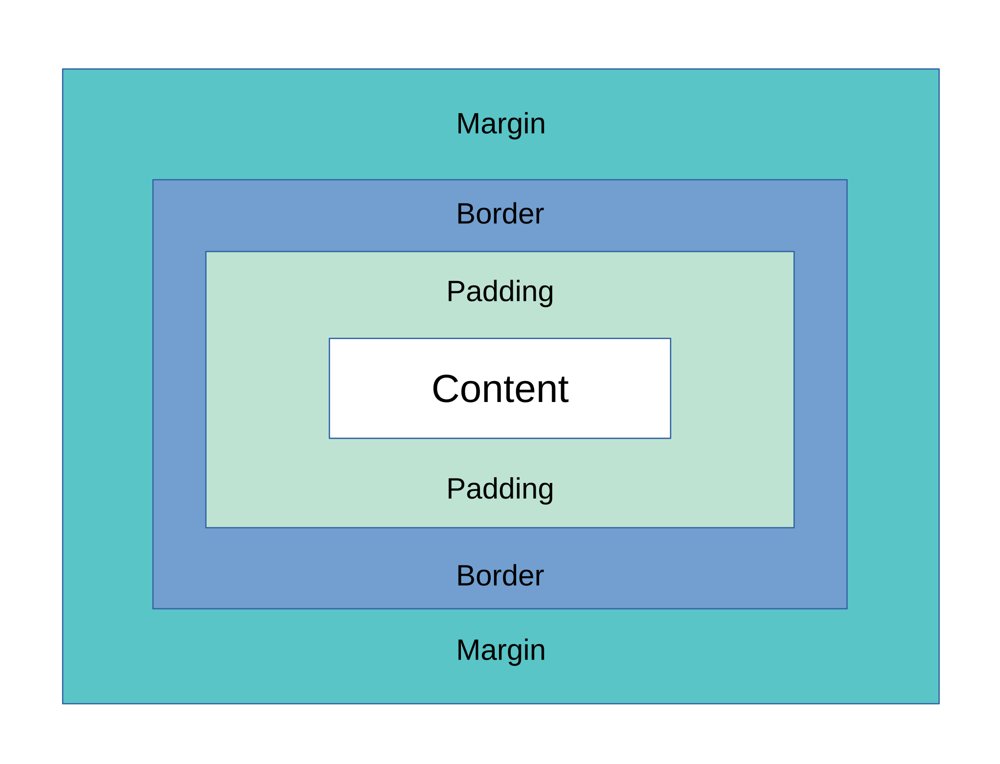
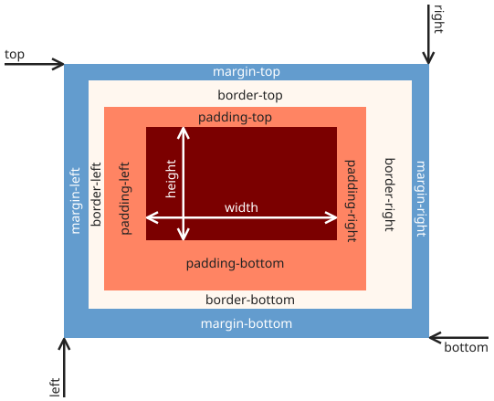

The Web Up Close
Making the Web Beautiful
Watch & Learn
- Learn CSS in 20 Minutes (Web Dev Simplified, 20 min)
- CSS Box Model Tutorial for Beginners (Dave Gray, 10 min)
- Learn Flexbox the Easy Way (Kevin Powell, 15 min)
- Responsive Design Made Easy (Kevin Powell, 13 min)
Video Quiz
In the Web Dev Simplified “Learn CSS in 20 Minutes” video, what are the three places you can write CSS?
In the Web Dev Simplified video, which CSS selector targets elements by their class name?
In Dave Gray’s CSS Box Model video, what does he say the box-sizing: border-box property changes about how width is calculated?
In Kevin Powell’s “Learn Flexbox the Easy Way” video, what does the justify-content property control?
In Kevin Powell’s “Responsive Design Made Easy” video, what approach does he recommend for building responsive layouts?
In Dave Gray’s video, which part of the box model sits between the content and the border?
Theory
Selectors, Properties, and Values
Cascading Style Sheets (CSS) is the language that controls how a web page looks. HTML gives a page its structure; CSS gives it color, spacing, fonts, and layout. Every CSS rule has three parts: a selector that picks which HTML elements to style, a property that names what you want to change, and a value that says how to change it.
For example, h1 { color: navy; } targets every <h1> element (the selector),
sets the text color (the property), and chooses navy blue (the value). You can group multiple properties inside
the same curly braces, and you can target elements by their tag name, by a
class
(using a dot, like .intro), or by an
ID
(using a hash, like #header).
The word “cascading” matters: when two rules conflict, the browser follows a set of priority rules called specificity. An ID selector beats a class selector, a class selector beats a tag selector, and inline styles beat almost everything. Understanding this cascade is the key to avoiding mysterious styling bugs.

The Box Model: Margin, Border, Padding, Content
Every element on a web page is an invisible rectangle — a “box.” The CSS box model describes the four layers that make up each box, from inside to outside:
- Content — the text, image, or other media inside the element
- Padding — transparent space between the content and the border
- Border — a visible (or invisible) line around the padding
- Margin — transparent space outside the border that pushes other elements away
By default, when you set an element’s width, the browser only counts the content area.
Padding and border get added on top, making the element wider than you expected. The fix is one line:
box-sizing: border-box;. With border-box, the width you set includes content,
padding, and border all together — much easier to manage.
Open your browser’s
developer tools
(press F12), click any element, and look at the box model diagram. You can see exactly how
much space each layer takes up. This is the fastest way to debug layout problems.

Layout with Flexbox
Before Flexbox, lining up elements side by side required hacks like floats or inline-block tricks. Flexbox replaced all of that with a clean, one-dimensional layout system.
To use it, set display: flex; on a parent container. Its direct children become
“flex items” that automatically line up in a row. From there you have powerful controls:
flex-direction— choose row (left to right) or column (top to bottom)justify-content— distribute items along the main axis (center,space-between,space-around)align-items— align items along the cross axis (center,stretch,flex-start)gap— add even spacing between items without extra marginsflex-wrap— let items wrap to a new line when the container gets too narrow
Flexbox is perfect for navigation bars, card grids, centering content, and any layout where items flow in one direction. For two-dimensional layouts (rows and columns at the same time), there is also CSS Grid, but Flexbox alone will handle most everyday tasks.
Responsive Design with Media Queries
People browse the web on phones, tablets, laptops, and giant monitors. A layout that looks great on a wide desktop can be unreadable on a narrow phone screen. Responsive web design solves this by making a single page adapt to any screen size.
The main tool for this is the media query. A media query wraps CSS rules in a condition — usually a minimum or maximum screen width. For example:
@media (max-width: 600px) {
.cards { flex-direction: column; }
}This rule says: “When the screen is 600 pixels wide or less, stack the cards vertically instead of side by side.” You can have as many media queries as you like, each one adjusting different parts of your design at different breakpoints.
A common approach is to design “mobile first” — start with styles for small screens, then add
media queries with min-width to layer on styles for wider screens. This keeps small-screen users
from downloading extra styles they don’t need and encourages simpler, content-focused layouts.
Don’t forget the
viewport meta tag
in your HTML <head>:
<meta name="viewport" content="width=device-width, initial-scale=1.0">.
Without it, mobile browsers zoom the page out to fit a desktop-sized layout, and media queries won’t
work as expected.
Theory Quiz
A CSS rule has three parts. Which answer lists them correctly?
In the CSS box model, what is the correct order from innermost to outermost layer?
Which CSS property turns a container’s children into a horizontal row with even spacing?
What does @media (max-width: 600px) { … } do?
Why is box-sizing: border-box; useful?
Build: Style Your “About Me” Page
Take the “About Me” HTML page you built in Lesson 6 and transform it with CSS. Your goal is to turn a plain, unstyled page into something that looks polished and works on both wide and narrow screens.
Requirements:
- Pick a custom color scheme — set
background-color,color, and at least one accent color for headings or links - Use Flexbox to lay out at least one section (for example, a row of hobby cards or a navigation bar)
- Add at least one
@mediaquery that changes the layout on small screens — for example, switching a Flexbox row to a column when the screen is narrower than 600 pixels - Style your links with a
:hovereffect (change color, add an underline, or shift the element slightly) - Use
box-sizing: border-box;on all elements so padding doesn’t break your widths - Make sure text is readable — set a reasonable
max-widthon the main content area and center it withmargin: 0 auto;
Bonus challenges:
- Add a CSS transition so hover effects animate smoothly
- Use CSS custom properties (variables) for your colors, e.g.
--accent: #e63946; - Style a “dark mode” version using a second media query:
@media (prefers-color-scheme: dark)
Solve it in JSFiddle:
Open JSFiddlePaste your HTML into the HTML panel and your CSS into the CSS panel. Click “Run” to see the result. Try resizing the result pane to test your media query!